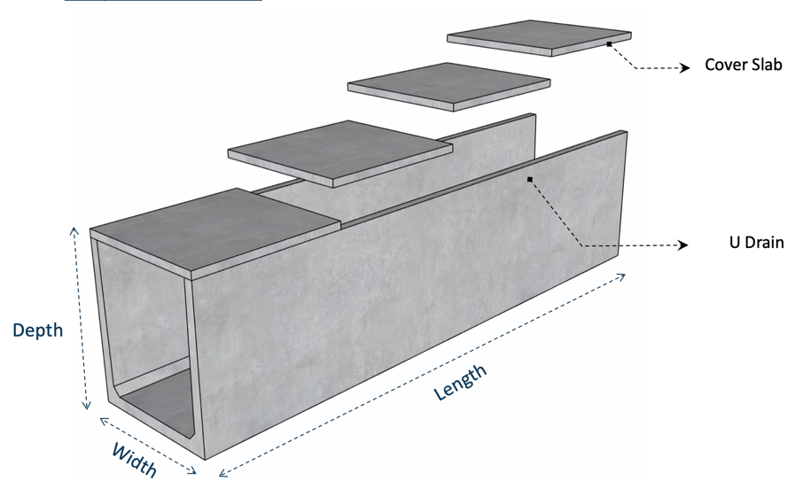
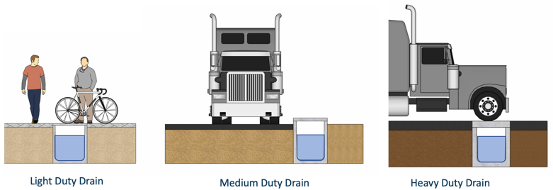
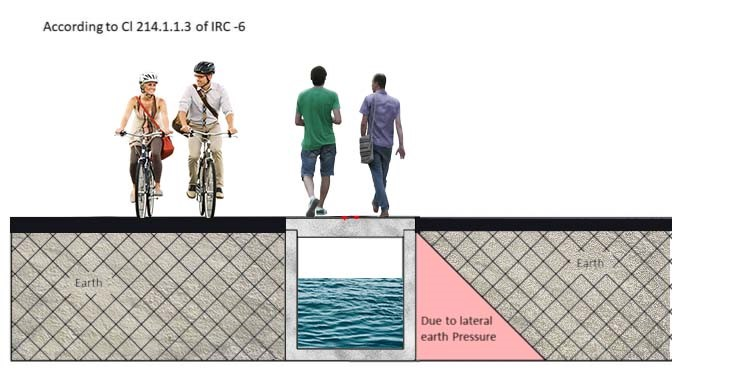
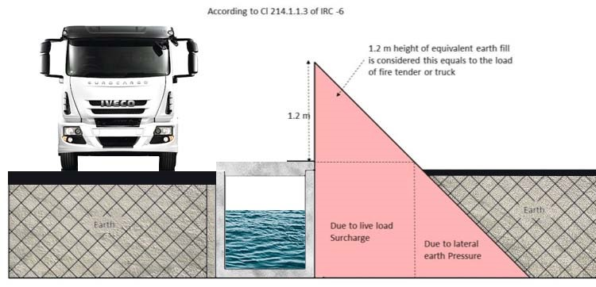
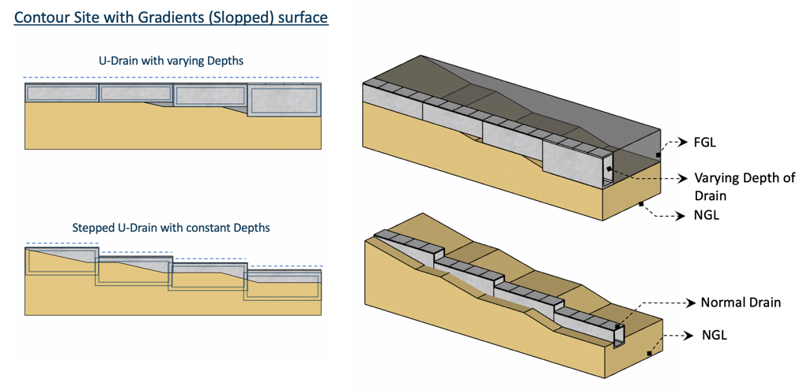
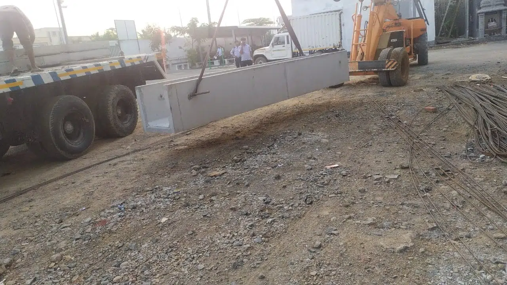
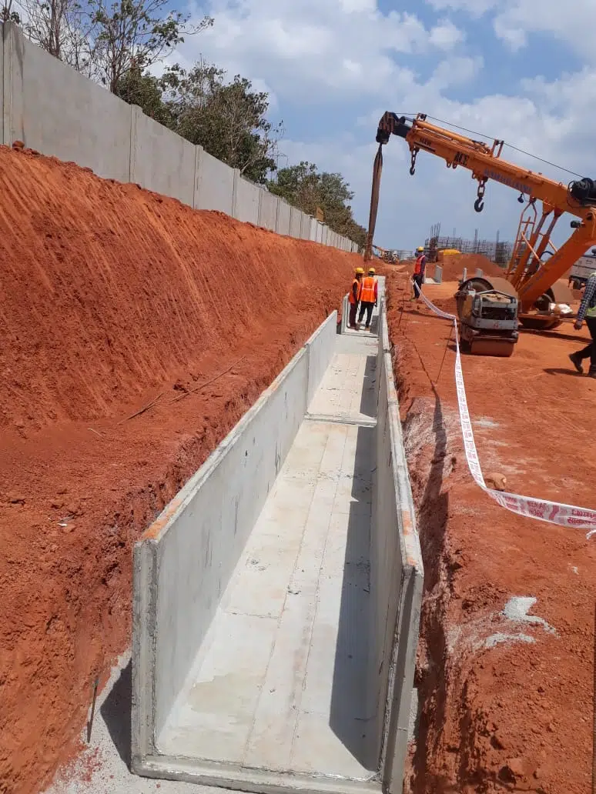
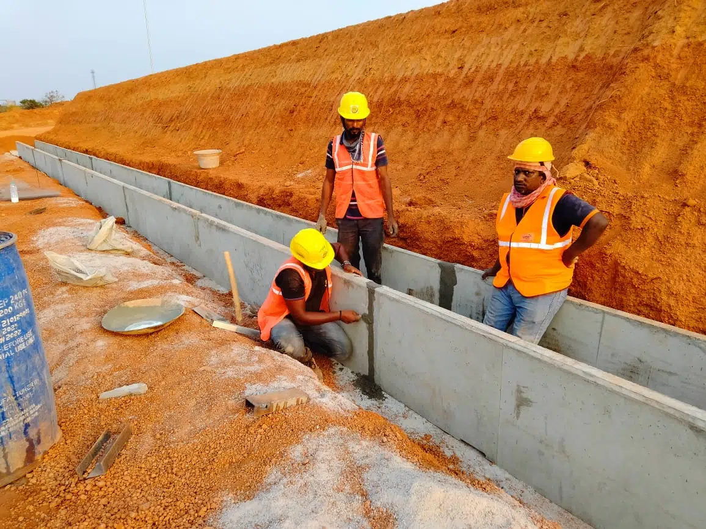
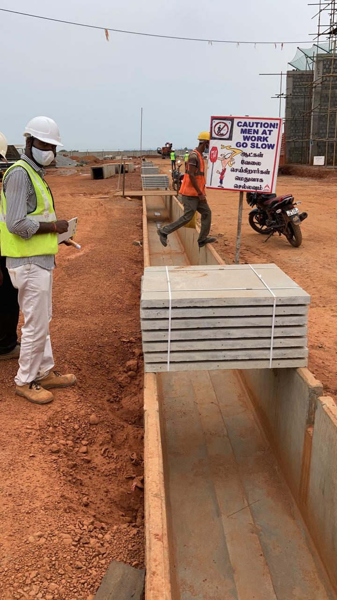

PRECAST U-DRAINS
‘U’-Drains can be used for indoor and outdoor applications. They come with cover slabs, which are designed for various load conditions
Drains are factory made, casted in a closed environment, having superior quality and well suited for fast paced construction
Superior Quality
Well-Engineered
Easy and Quick to Install
| S.NO | WIDTH (MM) | HEIGHT (MM) |
|---|---|---|
| 1 | 450 | 450 to 600 |
| 2 | 600 | 450 to 600 |
| 3 | 600 | 450 to 1000 |
| 4 | 1200 | 600 to 1000 |
| 5 | 900 | 600 to 1000 |
Standard Cover Slab thickness:
Easy and Quick to Install
Easy and Quick to Install

MATERIAL SPECIFICATION
Concrete : Grade 40 to Grade 45
Steel : Fe500
Nominal cover : 25mm
REQUIREMENTS
Density of backfill soil should be minimum18 Kn/m3
Backfill material adjacent to side wall should be of granular type
Backfilling and compaction to be performed layer by layer alternatively on either side of the drain until the top of the drain.
LOADS:
The thicknesses of side walls, base slab and cover slabs of these drains are dependent on the type of loading coming on to the drains.
Three variants are – Light Duty, Medium Duty and Heavy duty.

Light duty
Light duty means, the drain is designed only for lateral Earth Pressure and a Live Load of 150 Kg/Sqm. Cover slab on top of these drains will also be of light duty in nature because only human load will be on top and there cannot be movement of any loads more than 150 Kg/Sqm.


Midium duty
Medium duty means the drain is designed for lateral Earth pressure, Live Load Surcharge (for an equivalent height of 1.2 m earth fill) and vehicular traffic will be passing by adjacent to the drain wall. Here again, the cover slabs will be of light duty, as there can be only human traffic over it and no vehicles will be passing.
Heavy duty
Heavy duty drain means, the drain is designed for lateral Earth pressure, Live Load Surcharge (for an equivalent height of 1.2 m earth fill) and heavy Vehicles over the drain. Here the cover slabs on the drain top will be of heavy duty, as it has to take the load of Heavy Vehicles.
LAYING / POSITIONING OF ‘U’ – DRAINS:
Based on the topography of the land, the drains will be laid. If the top level of the drain has to be kept flat level irrespective undulations or level differences in the existing ground level, then different depths of the drain have to be chosen to get the required slope. Inner slope for the free flow of water will be achieved by laying Plain Cement Concrete.
If the drain has to be laid as per the topography of the land (Top level of the drain will not be on flat level and varying according to the existing ground level), then there will not be any need for laying Plain Cement Concrete, provided there is enough slope for the water to flow.

ERECTION OF ‘U’ – DRAINS:
The drains are very easy to erect. Soil is excavated to the required depth and then the trench is levelled. If the soil is good, then quarry dust/sand is spread. If the soil is poor and clayey, then Plain Cement Concrete is laid. Drains are placed along the levelled surface. To hold the two pieces together in position, ‘U’ bars will be placed in the slots provided in the wall and bottom slabs and then grouted. This will prevent the drain from sliding or moving while backfilling.
The vertical and horizontal joints will be filled with grouts. Length of each drain is 6 m and a team of 4 people and one crane can erect close to 15 pieces, which is about 90 m. If the same work has to be done in conventional way, it will involve lot of labour and time. Alignment of the drain and getting a straight line will be very difficult. Also the top level of the drain is equally important for cover slabs to have a uniform level, so that the people walking on top will not have any difficulty.

TRUCK UNLOADING

BASE PREPARATION AND PLACING

JOINTING

COVER SLAB UNLOADING
COVER SLAB LAYING
VME Precast ’U’ – Drains are casted as a monolithic piece and there will be no chance for leakages in the bottom joints of vertical wall and base slab, whereas in conventional precast, bottom slab is casted separately and then the walls are casted separately, thereby leaving a cold joint and hence there is every chance that water will leak through the joints. When there are heavy rains, we will not be able to know if the water is coming from the road or from the joints.
Constructing drains in the conventional way will be difficult and time consuming.
Precast ‘U’ – Drains are easy to erect, quick to complete strong and durable.